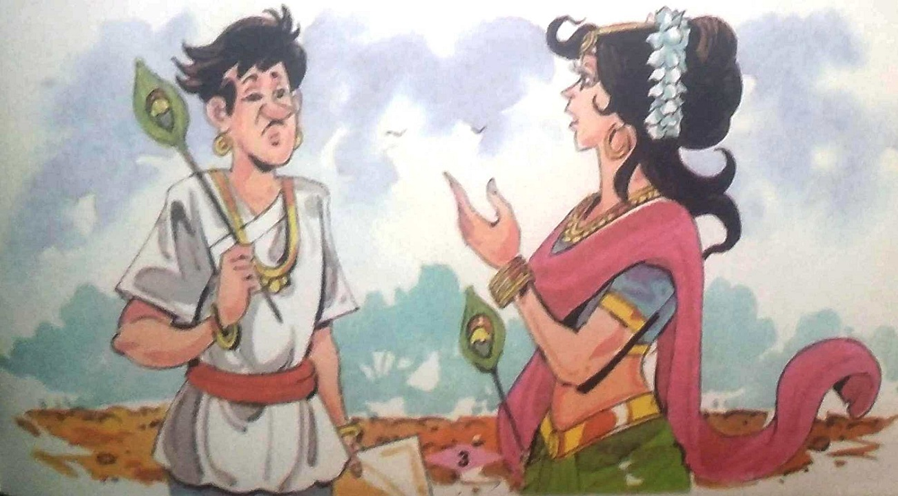
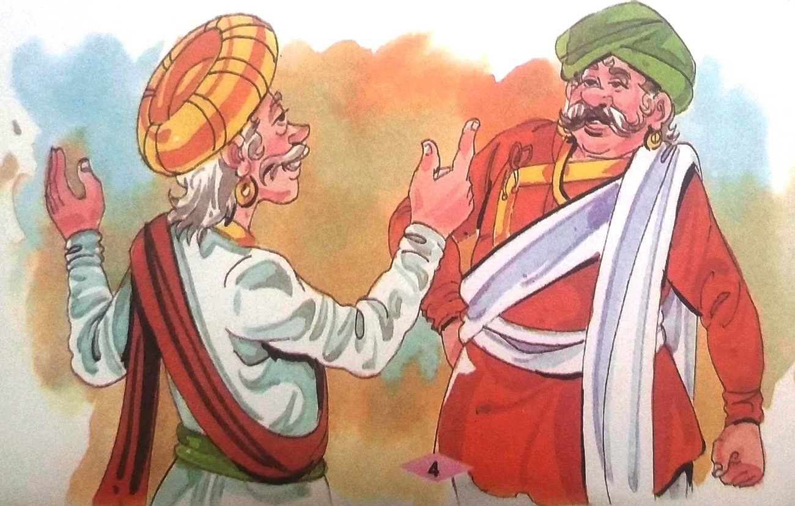
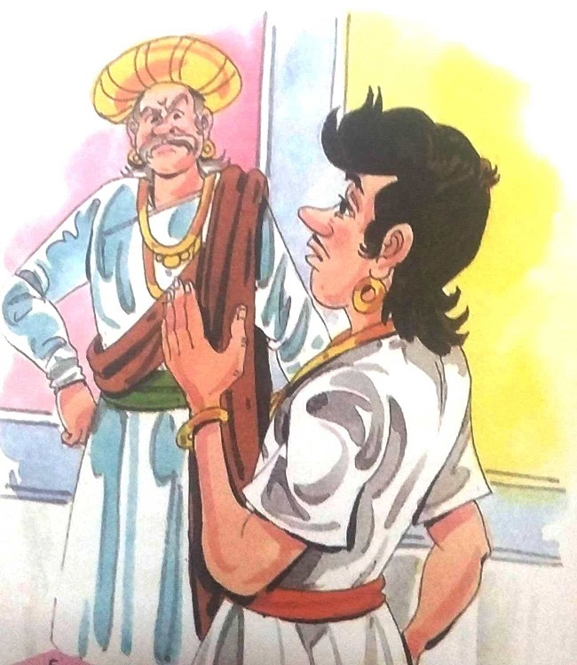
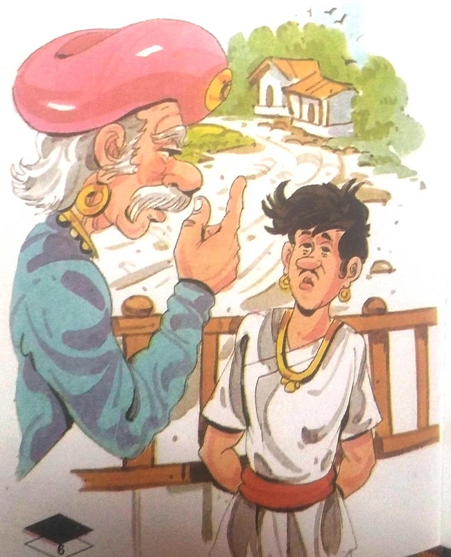
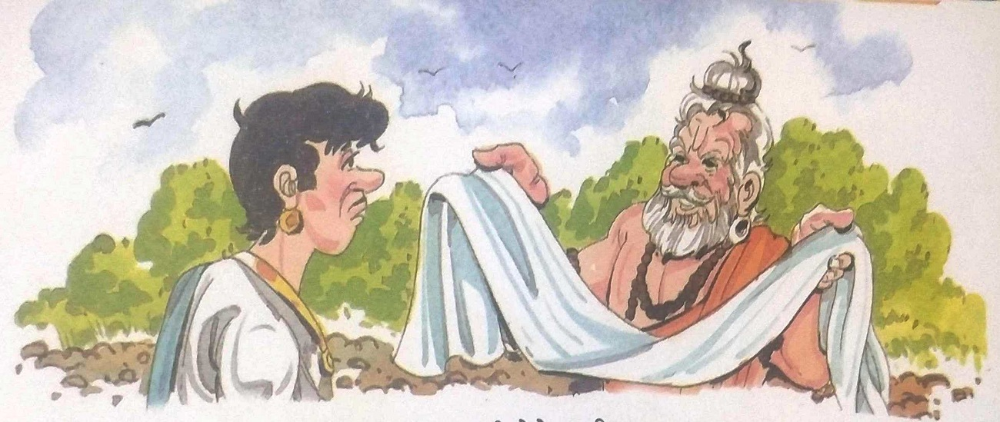
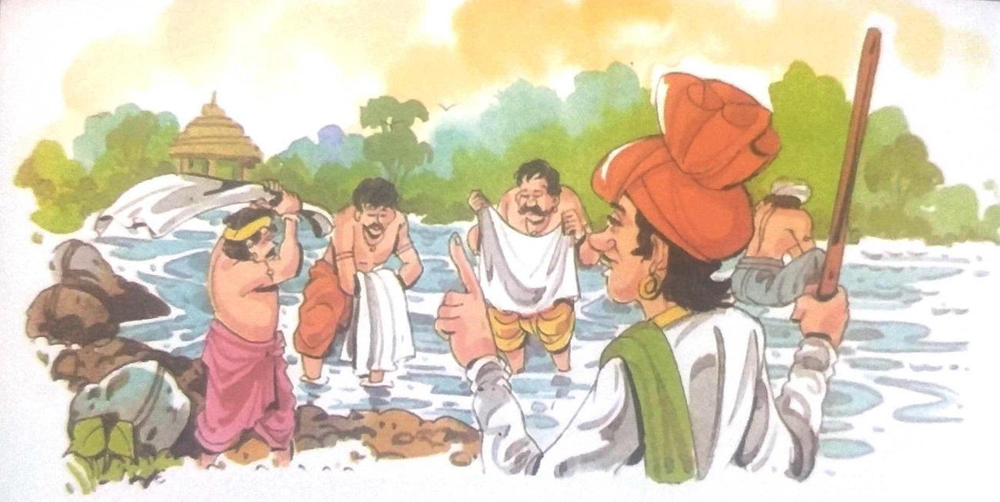
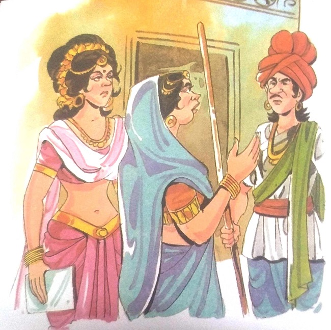
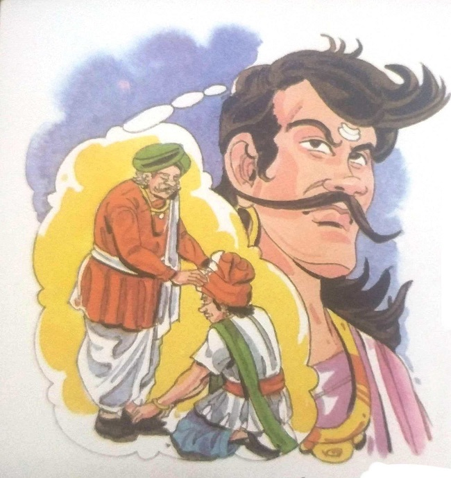

૨૨-વ્યવસાય માટે આદર
મૃતદેહને નીચે લાવવા માટે રાજા વિક્રમાદિત્ય ફરી એકવાર વટવૃક્ષ પર ચઢ્યા. તેણે મૃતદેહને
પોતાના ખભા પર મૂક્યો અને ઝાડ પરથી નીચે ઉતર્યો. તેઓ મૃતદેહ લઈને ચાલ્યા ગયા. પછી વેતાલાએ રાજા
વિક્રમાદિત્યને બીજી વાર્તા કહેવાનું શરૂ કર્યું-
એક સમયે ભોજપુરમાં લક્ષ્મીદાસ નામનો હીરાનો ધનિક વેપારી રહેતો હતો. તેને ત્રણ પુત્રો
હતા. બંને મોટા પુત્રો તેમને તેમના વ્યવસાયમાં મદદ કરતા હતા, જ્યારે નાના પુત્ર દેવી પ્રસાદને
વ્યવસાયમાં બિલકુલ રસ નહોતો. તેઓ તેમનો મોટાભાગનો સમય કવિતાઓ લખવામાં અને પુસ્તકો વાંચવામાં પસાર
કરતા હતા.
આ જ શહેરમાં એક જાણીતા કવિ રહેતા હતા. તેમના ઘરે રોજ સાંજે સેમિનાર
થતો. આ પરિસંવાદમાં દેવીપ્રસાદ કવિતા સંભળાવતા. વિમલા નામની છોકરી પણ ત્યાં આવતી.
તેણીએ સારી કવિતાઓ પણ લખી. ધીરે ધીરે દેવીપ્રસાદ અને વિમલા મિત્રો બન્યા.
આ જ શહેરમાં એક જાણીતા કવિ રહેતા હતા. તેમના ઘરે રોજ સાંજે સેમિનાર થતો. આ
પરિસંવાદમાં દેવીપ્રસાદ કવિતા સંભળાવતા. વિમલા નામની છોકરી પણ ત્યાં આવતી. તેણીએ
સારી કવિતાઓ પણ લખી. ધીરે ધીરે દેવીપ્રસાદ અને વિમલા મિત્રો બન્યા.
વિમલાએ દેવીપ્રસાદને કહ્યું, "મારા પિતા જગનપુરના એક શ્રીમંત વેપારી
છે. અમે તેમની સારવાર કરાવવા માટે અહીં આવ્યા છીએ. હવે તેમની તબિયતમાં સુધારો થઈ
રહ્યો છે. જ્યારે તેઓ સ્વસ્થ થઈ જશે ત્યારે અમે પાછા જગનપુર પાછા આવીશું."

એ વખતે
દેવીપ્રસાદે કંઈ કહ્યું નહીં, પણ જ્યારે એક દિવસ વિમલાએ કહ્યું કે તેમના પિતા
સ્વસ્થ થઈ ગયા છે અને તેઓ જગનપુર પાછા ફરી રહ્યા છે, ત્યારે દેવી પ્રસાદ થોડા
ચિંતિત થઈ ગયા. હિંમત ભેગી કરીને તેણે વિમલા સમક્ષ પોતાની લાગણી વ્યક્ત કરી અને
કહ્યું, "વિમલા! હું તારી સાથે લગ્ન કરવા માંગુ છું." આ સાંભળીને વિમલાએ કહ્યું,
“પહેલાં તું તારા માતા-પિતા સાથે વાત કર અને મારા પિતા પાસે મારો હાથ પૂછો."
દેવીપ્રસાદને વિમલાના શબ્દો સાચા લાગ્યા. તેણે
વિચાર્યું કે તેણે પહેલા તેના માતાપિતા સાથે ચોક્કસપણે વાત કરવી જોઈએ.
દરમિયાન લક્ષ્મીદાસ ધંધાના સંબંધમાં જગનપુર ગયા હતા. તેમના બાળપણના મિત્ર જગતલાલ ત્યાં
રહેતા હતા. તે એક અમીર વેપારી હતો. તે તેના ઘરે ગયો. જગતલાલને ત્રણ દીકરીઓ હતી. ત્રણેય સુંદર અને
સારા સ્વભાવના હતા. તેણે લક્ષ્મીદાસની ખૂબ કાળજી લીધી. લક્ષ્મીદાસ તેમનાથી ખૂબ પ્રભાવિત થયા. તેણે
જગતલાલને કહ્યું, "મિત્ર! તારી ત્રણેય દીકરીઓ ખૂબ જ પ્રતિભાશાળી છે. મને તેઓ ખૂબ જ ગમ્યાં. હું
ઈચ્છું છું કે અમે અમારી મિત્રતાને સગપણમાં પરિવર્તિત કરીએ. હું મારા ત્રણ પુત્રો માટે તમારી ત્રણેય
દીકરીઓના હાથ માંગું છું."

જગતલાલે કહ્યું, "મિત્ર! તારો પ્રસ્તાવ બહુ સારો છે. મને કોઈ વાંધો નથી, પણ તું પહેલા
તારા પુત્રોને પૂછી લે, પછી મારી બાજુથી તેઓ તેને હા પાડી દે.
કારણ કે મારી દીકરીઓ મારી વાતને ક્યારેય અવગણશે નહીં. હું આશા રાખું છું કે તમારા પુત્રો પણ આ
સંબંધને નકારશે નહીં, પરંતુ તેમ છતાં તેમની સાથે વાત કરવી યોગ્ય રહેશે. જો તે હા કહેશે તો અમે
બાળકોને ધામધૂમથી પરણાવીશું."
લક્ષ્મીદાસને જગતલાલની વાત સાચી લાગી. ભોજપુર પાછા ફરતી વખતે, તેમણે
તેમના બાળપણના મિત્ર જગતલાલ સાથે કરેલી વાતચીત વિશે તેમના ત્રણ પુત્રોને કહ્યું.
બંને મોટા પુત્રો ખુશીથી લગ્ન માટે સંમત થયા, પરંતુ દેવીપ્રસાદ અસંમત થયા અને
બોલ્યા, “પિતાજી! હું આ સંબંધને સ્વીકારતો નથી. હું જગનપુરના વેપારી ધનીરામની
પુત્રી વિમલાને પ્રેમ કરું છું અને તેની સાથે જ લગ્ન કરીશ."
"ધનીરામ? ના-ના. તે આપણો દુશ્મન છે. દુશ્મનની દીકરીને તારી વહુ
બનાવવાનું હું ક્યારેય સ્વીકારીશ નહીં. તારે તેની સાથે લગ્ન કરવાનો વિચાર તારા
મનમાંથી કાઢી નાખવો જોઈએ," લક્ષ્મીદાસે સહેજ ઊંચા અવાજે કહ્યું.
"મને આ બધું ખબર નથી. હું વિમલા સાથે જ લગ્ન કરીશ, નહીંતર હું લગ્ન
નહીં કરું," દેવી પ્રસાદે કહ્યું. "ઠીક છે! તો પછી મારા ઘરમાં તમારા માટે કોઈ જગ્યા
નથી. ચાલ અહીંથી" લક્ષ્મીદાસે કહ્યું.
દેવી પ્રસાદ કંઈ બોલ્યા વગર ચુપચાપ ઘરની બહાર નીકળી ગયા. ઘર છોડીને તે
જગનપુર
પહોંચ્યો. ત્યાં તે વિમલાને મળ્યો અને તેને આખી વાત કહી. વિમલાએ કહ્યું, "અમારા
પરિવારો વચ્ચે દુશ્મની છે, હું આ વાતથી અજાણ હતી. જો દુશ્મનાવટ હશે તો મારા પિતા પણ
અમારા લગ્ન માટે રાજી નહીં થાય."
"તો પછી તું પણ મારી જેમ તારું ઘર છોડીને મારી સાથે આવ. મેં તારા માટે બધું પાછળ
છોડી દીધું
છે,” દેવી પ્રસાદે વિમલાને કહ્યું
|

|
|

|
ના, આપણે એવું નહીં કરીએ. તમારી પાસે ન તો રહેવાની જગ્યા છે કે ન તો
આવકનો સ્ત્રોત.
તમારા પરિવારના સભ્યો તમને મદદ કરવામાં અસમર્થ હતા. હવે જો હું પણ ઘર છોડી દઉં તો
મારો પરિવાર અમને મદદ નહીં કરે. તો પહેલા તું સારી નોકરી શોધ, પછી આપણે લગ્ન
કરીશું," વિમલાએ તેને સમજાવ્યું. દેવીપ્રસાદ તેની સાથે સંમત થયા. તેણે નોકરી
શોધવાનું શરૂ કર્યું, પણ તેના તમામ પ્રયત્નો વ્યર્થ ગયા. તેની પાસે કરવાનું કોઈ કામ
નહોતું. દરમિયાન, તેણે ભૂખ્યા પણ રહેવું પડ્યું.
દેવીપ્રસાદની દુર્દશા જોઈને બાજુના ગામના એક શ્રીમંત માણસે તેને
કહ્યું, "દેવી
પ્રસાદ! અમારા ગામમાં કોઈ ધોબી નથી. જો તમે ત્યાં આ કામ કરશો તો તમને સારા પૈસા
મળશે. એટલું જ નહીં, પણ તમે કમાઈ શકશો. તમને ભોજન પણ મળશે."
દેવી પ્રસાદને આ તુચ્છ કામ કરવાનું મન ન થયું, પણ તેમની પાસે બીજો કોઈ
વિકલ્પ
નહોતો. તે વ્યક્તિ સાથે સંમત થયા અને વજ્રપુર ગામમાં આવ્યા અને ધોબીનું કામ શરૂ
કર્યું. તેણે સારી કમાણી શરૂ કરી. એક દિવસ એ ગામમાં એક સંત આવ્યા. તેણે તેના કપડાં
કાઢી લીધા. બામમાં તેણે દેવીપ્રસાદને બોલાવીને કહ્યું, "જુઓ, તારે કપડાં કેવી રીતે
ધોવા પડશે. દીકરા, જો તું જુલમથી કામ નહીં કરે તો તારા ધંધામાં કેવી રીતે પ્રગતિ
થશે?"
દેવી પ્રસાદે કહ્યું, "હું વ્યવસાયે ધોબી નથી. હું આ કામ માત્ર એટલા
માટે કરી રહ્યો
છું કે મારી પાસે બીજો કોઈ વિકલ્પ નથી."
|
ઋષિએ કહ્યું, "યાદ રાખો કે આપણે કોઈ પણ કામ પૂરા દિલથી કરવું જોઈએ. જ્યારે આપણે કોઈ
પણ કામ દિલથી અને ધ્યાનથી કરીએ છીએ ત્યારે જ આપણને પ્રગતિ મળે છે."
"પણ મને આ કામ ગમતું નથી," દેવીપ્રસાદે કહ્યું. "જો તમને તમારા કામથી પૈસા અને
પ્રસિદ્ધિ મળી રહી છે, તો પછી તે કામ કેવી રીતે તુચ્છ ગણાય? કોઈપણ કામ કરનાર
વ્યક્તિના આદરથી આદર થાય છે." તેથી અમે અમારા કામ કે વ્યવસાય પર હંમેશા ગર્વ હોવો
જોઈએ." પછી સાધુએ દેવીપ્રસાદને કપડાં ધોવાની ટેકનિક શીખવાની પદ્ધતિ સમજાવી.

ઋષિની સલાહ પર કામ કરતા, દેવી પ્રસાદે આસપાસના ગામોના ઘાટનું નિરીક્ષણ કર્યું.
ત્યાં જઈને તેમણે ત્યાંના ઘોષીઓની કાર્યપદ્ધતિઓ અને ટેકનિકોનું ધ્યાનપૂર્વક
નિરીક્ષણ કર્યું અને તેનું વિશ્લેષણ કર્યું. તેણે જોયું કે ધોબીઓ તેમના ગ્રાહકોને
કેવી રીતે સંતુષ્ટ કરે છે. તેણે જોયું કે ધોબી જૂના કપડાને રંગ આપે છે અને તેના પર
ચરક વગેરે કરે છે. વજ્રપુર પાછા આવીને દેવી પ્રસાદે એ જ ટેકનિક અપનાવી. તેણે ખંતથી
કામ કરવાનું શરૂ કર્યું. ધીમે ધીમે તેનું કામ ઘણું વધી ગયું. તેણે કેટલાક લોકોને
નોકરી પર રાખવાની પણ હતી. આ રીતે ગામના યુવાનોને રોજગારી પણ મળી. ટૂંક સમયમાં જ
તેણે ગામમાં પોતાના માટે એક ખાસ જગ્યા બનાવી લીધી.

દરમિયાન જગતલાલે તેમના મિત્ર લક્ષ્મીદાસ વિશે સાંભળ્યું. તે લક્ષ્મીદાસને મળવા ગયો
અને કહ્યું, "તમારા અને તમારા ત્રીજા પુત્ર વચ્ચેના ઝઘડાના સમાચાર સાંભળીને મને ખૂબ
જ દુઃખ થયું છે. મારા કારણે તમારા બંને વચ્ચે ઝઘડો થયો છે. હવે હું આ સમસ્યાનો ઉકેલ
લાવીશ. વિમલાના પિતા ધનીરામ મારા સારા મિત્ર. તમારા બંને વચ્ચે ગમે તેટલી લડાઈ હોય,
તેને તમારા બાળકોની ખુશીમાં ન લાવો. મેં ધનીરામ સાથે વાત કરી છે, તે જૂની લડાઈ ભૂલી
જવા તૈયાર છે. હવે આપણે દેવીપ્રસાદને મળીશું અને તેમને પાછા લાવીશું. જેથી કરીને તે
અને વિમલા લગ્ન કરી શકે છે."
|

|
લક્ષ્મીદાસ જગતલાલ સાથે સંમત થયા. તે ધનીરામને મળવા ગયો અને તેમની પરસ્પર
ફરિયાદોનું નિરાકરણ કર્યું. પછી લક્ષ્મીદાસ તેમના પરિવારના સભ્યો, જગતલાલ, ધનીરામ
અને વિમલા સાથે દેવીપ્રસાદને મળવા વજ્રપુર ગયા. દેવીપ્રસાદે સૌનું ઉષ્માભેર સ્વાગત
કર્યું. તેણે બતાવ્યું કે કેટલી મહેનત કરીને પ્રગતિ સાધી છે. તેના વિશે સાંભળીને
તેની માતાએ કહ્યું, "દીકરા. એમાં કોઈ શંકા નથી કે તેં ખૂબ મહેનત કરીને નામ અને પૈસા
કમાયા છે. પણ અમે તારા વ્યવસાયથી ખુશ નથી. યાદ રાખ કે તું હીરાના વેપારીનો દીકરો
છે."
વિમલા તેની સાથે સંમત થઈ અને કહ્યું, "હું પણ આ તુચ્છ કામથી ખુશ નથી અને
તેની
તરફેણમાં પણ નથી. જો તું આ કામ કરીશ તો હું તારી સાથે લગ્ન નહિ કરું. તારે અને મારા
કામમાંથી તારે પસંદગી કરવાની રહેશે." દેવીપ્રસાદે તેની તરફ ધ્યાનથી જોયું અને પછી
કહ્યું, "તો પછી મારો નિર્ણય પણ સાંભળો. હું તે છોકરી સાથે લગ્ન કરીશ જે મને અને
મારા વ્યવસાયનું સન્માન કરશે." તેનો જવાબ સાંભળીને થોડીવાર મૌન છવાઈ ગયું. પછી
જગતલાલે દેવીપ્રસાદના ખભા પર હાથ મૂક્યો અને કહ્યું, "દીકરા. એક છોકરી છે જે દરેક
પરિસ્થિતિમાં તારી સાથે ખભે ખભા મિલાવીને ચાલવા તૈયાર છે અને તે બીજું કોઈ નહીં પણ મારી
ત્રીજી
દીકરી છે. શું તમે તેની સાથે લગ્ન કરવા તૈયાર છો?" દેવી
પ્રસાદે તરત જ જગતલાલના પગને સ્પર્શ કર્યો અને કહ્યું, "તમારી પુત્રી સાથે લગ્ન
કરીને મને આનંદ થશે. આ મારું સૌભાગ્ય હશે."
|
બેતાલે વાર્તા અહીં પૂરી કરી. તેણે
કહ્યું, "રાજા! વિમલા સાથે લગ્ન કરવા માટે દેવીપ્રસાદે પરિવાર છોડી દીધો હતો. તે
ધોબીનું કામ કરતો હતો. તેનાથી એટલી સારી કમાણી નહોતી થતી કે જે જેટલી હીરાના
ધંધામાં થાય. તેના ઉપર વધુ મહેનત કરવી પડી હતી. જ્યારે તેને જાણવા મળ્યું કે
વિમલાને તેનો વ્યવસાય પસંદ નથી, તો તે શા માટે હીરાના વેપારમાં પાછા જવા અને
આરામદાયક જીવન જીવવા માટે સંમત ન થઈ? એક તરફ, તેણે તેના માટે બધું છોડી દીધું હતું,
જ્યારે બીજી તરફ, તેણે તેનો વ્યવસાય કેમ ન છોડ્યો? શું તેનો નિર્ણય મૂર્ખામીભર્યો ન
હતો? મારા પ્રશ્નોના જવાબ આપો. જો તમે સાચો જવાબ જાણ્યા પછી પણ ખોટો જવાબ આપો તો
હું તમારા માથાના ટુકડા કરી દઈશ."
રાજા વિક્રમાદિત્યએ એક ક્ષણ પણ બગાડ્યા વિના જવાબ આપ્યો, "દેવી પ્રસાદ
હવે જ્ઞાની
અને પરિપક્વ બની ગયા હતા. કોઈ પણ વ્યવસાય નાનો કે મોટો હોતો નથી. જે કોઈ પણ
વ્યવસાય અપનાવે છે તે જ તે વ્યવસાય માટે માન અને નામ કમાય છે, એટલે કે, પછી જ તમે
તે કરી શકો છો. તે વ્યવસાયમાં સફળ થઈએ." આપણે વ્યવસાયની ગરિમા જાળવી શકીએ છીએ.
દેવીપ્રસાદે આ પાઠ એક સાધુ પાસેથી શીખ્યા હતા. દેવીપ્રસાદે ધોબી અને ડાયરના કામ
દ્વારા નામ અને પૈસા કમાયા હતા. તેથી, તેમણે તેમના વ્યવસાયને માન આપ્યું અને આગળ પણ
ચાલુ રાખવાનું નક્કી કર્યું. તેણીએ આ માટે પોતાનો પ્રેમ છોડી દીધો." વેતાલાએ
કહ્યું, "વિક્રમ. તમે બિલકુલ સાચું કહ્યું. પણ હવે હું જાઉં છું! તમે મોં ખોલ્યું
અને હું ગયો.
આમ, વેતાલા હસતા હસતા ચાલ્યા ગયા અને પાછા ઉડીને ઝાડ પર લટકી ગયા.
|

|
|